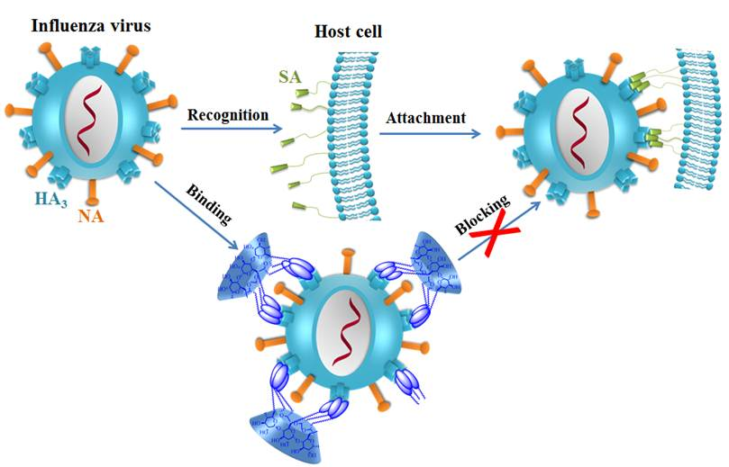

多价效应（multivalent effect）在许多生命过程中具有非常重要的作用，这种作用能够增加它们之间结合的强度与特异性，尤其是病毒感染宿主细胞的早期阶段。流感病毒就是借助于其表面的血凝素（HA）蛋白三聚体与宿主细胞表面的唾液酸（SA）受体特异性识别并结合，从而感染宿主细胞。
基于课题组前期发现的五环三萜的抗流感病毒的活性（Yu, M.; et al. J. Med. Chem.; 2014, 57: 10058-10071），本研究采用化学方法对这一效应进行模拟，设计并合成了以环糊精为骨架、外围缀合多个五环三萜药效团的不同系列的多价化合物，对他们的抗流感活性进行了研究，发现这一类化合物对A/WSN/33(H1N1)、A/JX/312 (H3N2)及A/HN/1222 (H3N2)多种流感病毒均具有抑制作用，其中以β-环糊精为骨架的齐墩果酸七价物的抗流感活性最强，比其对应的单价物的抗流感活性提高了大约125倍。进一步综合运用多种分子生物学方法对其作用机制进行了研究，发现这一类多价物主要作用于病毒感染宿主细胞的早期阶段，对HA蛋白具有特异的结合作用（KD = 2.08 μM），从而阻断HA三聚体与SA受体的结合。本研究为具有多价效应的抗流感病毒进入抑制剂的设计提供了新的思路。相关研究应邀在2015年中国药学大会上做分会报告并获优秀论文二等奖。最近该研究工作在Biomaterials在线发表（Xiao. S.; Zhou. D.;* et al. Biomaterials. 2015, DOI: 10.1016/j.biomaterials.2015.11.034）。

A proposed mechanism for pentacyclic-triterpene-CD multivalent conjugates mediated blocking of influenza virus entry.